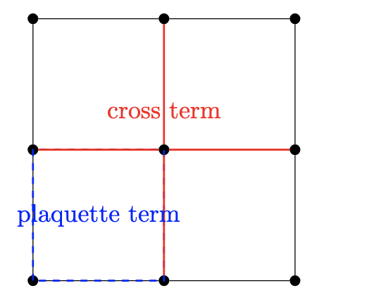
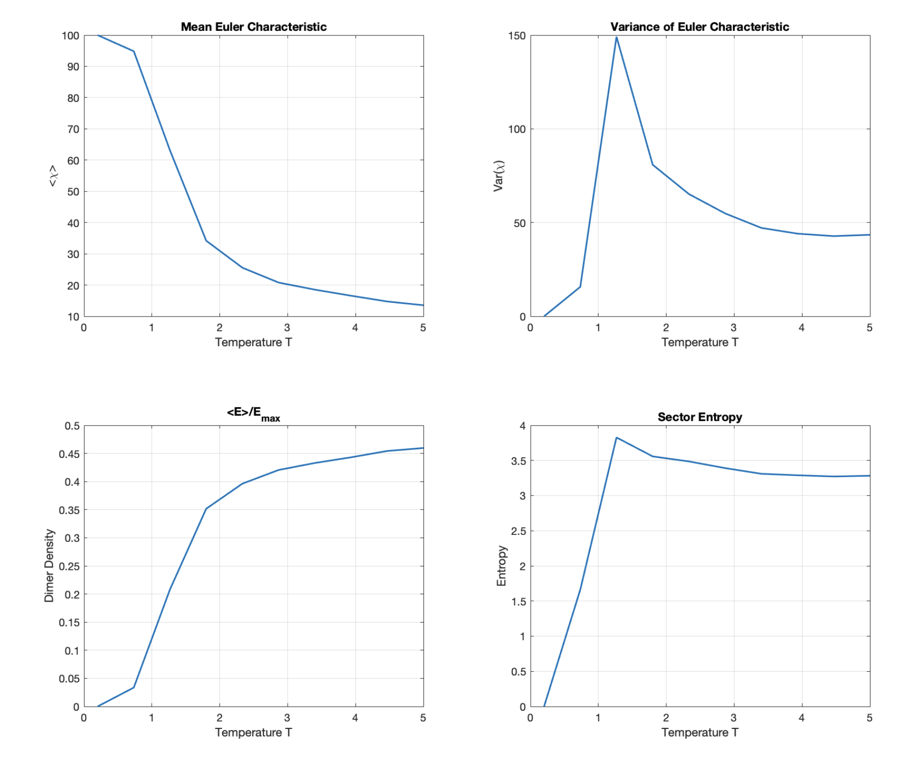

topology • dimers • gauge theory
A classical topological model in Statistical Mechanics
April 13th, 2026
Last year I attended, roughly in June, a workshop at the Santa Fe Institute on computation and thermodynamics. One of the talks was by Pedro Harunari, and he mentioned en passant of entropy production in some statistical many body systems. That got me thinking about the relationship between thermodynamics and topology, and in particular about the possibility of building a simple classical model whose energy is a function of a global topological invariant. Pedro and I rode together to the airport in Albuquerque a few days later. At the airport, I sat down trying to develop a totally classical "topological" model, something that had some topologicala features. In the attempt of doing that I started from the idea of adding dimers on a lattice, and add energy terms that resembled faces, nodes and edges, with the idea that they would add up to the Euler characteristic. I was able to write down a model that looked like it had the right ingredients, but then I realized that the local terms I had written down did not actually compute the Euler characteristic for generic configurations. I have found a combination of parameters that do that, but it only works for a subset of configurations. That was a bit of a bummer, but it also highlighted an important lesson: topology is global, and a purely local Hamiltonian that tries to count it will usually miss something essential. So the most honest conclusion is that the construction is a useful toy model and a useful set of notes, but not yet a genuine local realization of $E_{\mathrm{tot}}=\lambda\chi$ for arbitrary configurations. To get that exactly, one would need a more genuinely global definition of the energy, or a different framework altogether. More specifically, one can think of the Euler characteristic as a global quantity that encodes topological information about the system. This is given by: $$ \chi = V-E+F, $$ which already packages a surprising amount of geometric information into a single number. The question I wanted to explore is whether one can build a simple classical lattice model whose thermodynamics is organized by this quantity, and how far that point of view can be pushed before it runs into trouble. I never got to study the second part of the problem, too much other things got in the way, but I did write down some notes on the first part, and I thought it would be interesting to share them here. It turned out resembling quite closely, at the end, Kitaev's toric code, but in a purely classical setting. The model is not quantum, so it does not have topological order in the full quantum many-body sense, but it is still topological in what it is trying to count. I had also run some Monte Carlo simulations to get a feel for the thermodynamics, and I have included some of those results as well.
This post is a reconstruction of personal notes from last summar, that led in two different directions. One direction is constructive: formulate a dimer model, rewrite the partition function as a sum over topological sectors, and then connect the result to a classical $\mathbb{Z}_2$ gauge theory language. The second is what happens to standard quantities when the system crosses the "topological point".
1. Why the Euler characteristic is a natural starting point
The Euler characteristic is one of the oldest and simplest topological invariants. For a graph or cell complex embedded in a two-dimensional surface, it is defined by
$$ \chi = V-E+F, $$
where $V$ is the number of vertices, $E$ the number of edges, and $F$ the number of faces. What makes $\chi$ so useful is that it depends only on topology rather than on detailed geometry: smooth deformations do not change it. A sphere has $\chi=2$, a disk has $\chi=1$, a torus has $\chi=0$, and more generally a genus-$g$ surface has
$$ \chi = 2-2g. $$
Another basic fact is additivity over disconnected components. If a configuration splits as $G=G_1\sqcup G_2$, then
$$ \chi(G)=\chi(G_1)+\chi(G_2). $$
That already makes it a natural quantity for statistical mechanics. If one could engineer a model whose energy depends only on $\chi$, then the theory would be organized by topological sectors rather than by local geometric details. Formally, one would like to write
$$ E_{\mathrm{tot}}(\{\sigma\}) = \lambda\,\chi(\{\sigma\}), $$
with $\lambda$ setting the energy scale. In that case, locally different configurations with the same Euler characteristic would carry the same Boltzmann weight.
2. A dimer model on edges
Let us now make the model more concrete. Consider a two-dimensional lattice \(\mathcal L\), with vertices \(\mathcal V\), edges \(\mathcal E\), and plaquettes \(\mathcal P\). The degrees of freedom live on the edges: for each edge \(\ell\), we introduce an occupation variable
$$ n_\ell = \begin{cases} 1 & \text{if edge }\ell\text{ is occupied by a dimer,}\\ 0 & \text{otherwise.} \end{cases} $$
Unlike the usual hard-core dimer model, I am not imposing the constraint that exactly one dimer must touch each vertex. In this model, several occupied edges may meet at the same node. As a result, the allowed configurations are more general: they may contain overlaps, open structures, and closed loops.
The natural local quantity at a vertex \(i\) is its degree,
$$ d_i = \sum_{\ell \in i} n_\ell, $$
where the sum runs over all edges incident on the vertex \(i\).
We also need a local quantity associated with plaquettes. A plaquette \(p \in \mathcal P\) is said to be fully occupied when all edges along its boundary carry a dimer, namely when
$$ \prod_{\ell \in p} n_\ell = 1. $$
This suggests a natural attempt at building a local Hamiltonian from node, edge, and plaquette contributions:
$$ E_{\mathrm{tot}} = \alpha V + \beta \sum_i d_i + \gamma \sum_\ell n_\ell + \delta \sum_p \prod_{\ell \in p} n_\ell. $$
Here \(V\) is the total number of vertices, the second term measures how many occupied edges meet at each node, the third counts the total number of occupied edges, and the fourth counts the number of fully occupied plaquettes.
Since each occupied edge contributes to the degree of its two endpoints, one has
$$ \sum_i d_i = 2E, $$
where
$$ E = \sum_\ell n_\ell $$
is the total number of occupied edges. With this simplification, the Hamiltonian becomes
$$ E_{\mathrm{tot}} = \alpha V + (2\beta+\gamma)E + \delta F, $$
where, at least at first sight,
$$ F = \sum_p \prod_{\ell \in p} n_\ell $$
looks like the number of occupied faces. This is the point where the tempting argument appears: if one wants the energy to reproduce the Euler characteristic
$$ \chi = V - E + F, $$
then comparing with
$$ E_{\mathrm{tot}} = \lambda \chi = \lambda (V - E + F) $$
suggests the parameter choice
$$ \alpha = \lambda, \qquad 2\beta+\gamma = -\lambda, \qquad \delta = \lambda. $$
This is a very natural idea, and it is useful as a starting point. It tells us what kind of local ingredients one would like to use if one hopes to build an energy depending only on topology.

3. Partition function as a sum over topological sectors
If one takes seriously the idea that the energy depends only on the Euler characteristic, then the partition function acquires a very suggestive form. Starting from
$$ Z = \sum_{\{\sigma\}} e^{-E_{\mathrm{tot}}(\{\sigma\})}, $$
Now, it takes a second to realize that this cannot fully work. This sum will have a lot of configurations in which there is essentially one edge hanging, and do not make sense much from the topological point of view, as they do not really represent a face, but they will contribute to the energy as if they were a face. So the local terms do not really compute the Euler characteristic for generic configurations. One has to restrict this sum only to "spin" configurations, such that a face is complete. One way to do this in practice is by assuming that there is an underlying "space", a lattice or a representation of one or more surface or connected surface, such that one can turn "on" and "off" face. This means that the sum is not truly over the degrees of freedom on the edges, but on the dual lattice. I talked a bit about this with Pratik Sathe, we had sort of started to look at this together but we both got busy with our new jobs. Then, let's resume. Assuming now that we are in the parameter choice such that
$$ E_{\mathrm{tot}}(\{\sigma\}) = \lambda \chi(\{\sigma\}), $$
one finds that we have
$$ Z = \sum_{\{\sigma_p\in \mathcal{P}\}} e^{-\lambda \chi(\{\sigma_p\})}. $$
The sum above is now assumed over the configurations of the plaquette variables \(\sigma_p\), which are the natural degrees of freedom in this model. Each configuration corresponds to a particular graph defined by the occupied edges, and therefore to a particular value of the Euler characteristic. At that point, configurations with the same Euler characteristic contribute with the same Boltzmann weight, so it is natural to group them into sectors labeled by \(\chi\). If we define the degeneracy of a sector by
$$ g(\chi)=\#\bigl\{\{\sigma\}:\chi(\{\sigma\})=\chi\bigr\}, $$
then the partition function can be rewritten as
$$ Z = \sum_{\chi} g(\chi)e^{-\lambda\chi}. $$
Written this way, the model starts to look much less like an ordinary lattice system organized by local order parameters, and much more like a statistical sum over topological classes. The competition is between the Boltzmann weight \(e^{-\lambda\chi}\), which favors some values of the Euler characteristic over others, and the entropic factor \(g(\chi)\), which counts how many configurations realize each sector.
At least at a conceptual level, this is very reminiscent of the way two-dimensional gravity is often formulated, where one reorganizes the theory as a sum over discretized surfaces or triangulations, weighted by topological data together with combinatorial multiplicities. During the Perimeter times, the first year of the PSI program, François David gave a beautiful series of lectures on this perspective, and it is hard not to see the present model as a very simplified version of that story. David is a very gentle soul, I remember him breaking his glasses during the first days of the lectures, and for the rest of the course he had to hold them with one hand while writing on the board, which made the whole thing even more charming. These models are also the prelude to more complicated sums like those that exist in quantum gravity. Examples are causal dynamical triangulations (Ambjorn & Loll & Jurkiewicz) and so on and so forth (a review appeared just a few days ago). In that sense, the expression above has the flavor of the old matrix-model and random-surface viewpoint associated with two-dimensional gravity, and it is hard not to think of the perspective developed in the work of François David and others: the microscopic configurations are many, but the statistical mechanics can be reorganized in terms of global topological information.
It also resonates with another line of ideas that later became very important in quantum gravity, namely group field theory and related combinatorial approaches. Even though the present model is much simpler and entirely classical, the basic picture of summing over discrete building blocks and reorganizing the result in terms of global structures is philosophically close to what appears in two-dimensional versions of those theories. In that sense, it reminds me a little of the early work around the “second phase” of loop quantum gravity, after spin foams had clarified the covariant picture and people such as Oriti and Speziale were pushing these discrete sums in a more field-theoretic direction. The present model is not quantum, so it does not have the same kind of quantum superposition and entanglement that one finds in those theories, but the basic idea of summing over discrete configurations and organizing the result in terms of topological data is still there. See for instance the many reviews that Daniele Oriti and collaborators wrote over the years.
Going back to our model: there is also a simple structural consequence of this sector language: additivity becomes immediate. If a configuration splits into disconnected components, then the Euler characteristic adds,
$$ \chi(G_1 \sqcup G_2)=\chi(G_1)+\chi(G_2), $$
and therefore the energy does as well. For example, a disconnected square has \(\chi=1\), and a disconnected triangle also has \(\chi=1\), so together they contribute \(\chi=2\), corresponding to energy \(2\lambda\).
4. Spin variables and a classical $\mathbb{Z}_2$ gauge-theory viewpoint
To connect the model with more familiar lattice-gauge ideas, it is convenient to trade the occupation variables for edge spins,
$$ s_\ell= \begin{cases} +1 & \text{if edge }\ell\text{ is occupied},\\ -1 & \text{if edge }\ell\text{ is empty.} \end{cases} $$
Then
$$ n_\ell = \frac{1+s_\ell}{2}. $$
The total number of occupied edges becomes
$$ \sum_\ell n_\ell = \frac{E_{\max}}{2} + \frac12\sum_\ell s_\ell, $$
while the sum of degrees is
$$ \sum_i d_i = E_{\max}+\sum_\ell s_\ell. $$
For a plaquette $p$ with $m_p$ boundary edges,
$$ \prod_{\ell\in p} n_\ell = 2^{-m_p}\prod_{\ell\in p}(1+s_\ell). $$
Substituting these expressions into the energy gives a schematic form
$$ E_{\mathrm{tot}} = \text{const} + h\sum_\ell s_\ell + \lambda\sum_p 2^{-m_p}\prod_{\ell\in p}(1+s_\ell), $$
with
$$ h = \beta + \frac\gamma2. $$
This looks very much like a classical $\mathbb{Z}_2$ gauge-theory expression: the plaquette product plays the role of a magnetic-flux term, while the linear spin contribution acts like a coupling to a background field or static charge sector. It is in this sense that the model is naturally adjacent to the toric-code story.
The analogy becomes even clearer if one recalls the toric-code Hamiltonian
$$ H = -J_e\sum_v A_v - J_m\sum_p B_p, \qquad A_v = \prod_{\ell\in v}\sigma^x_\ell, \qquad B_p = \prod_{\ell\in p}\sigma^z_\ell. $$
The crucial difference, though, is that the toric code is quantum: its ground state is a coherent superposition of loop configurations. Here everything is classical, so topological sectors may exist, but there is no long-range entanglement and no anyonic statistics.
5. Monte Carlo observables
To get at least a first numerical feel for the model, I simulated it on a periodic \(10\times 10\) square lattice, working in the space of plaquette variables rather than directly in the space of edge occupations. Each plaquette carries a binary variable \(\sigma_p\in\{0,1\}\), and a single Monte Carlo move consists of choosing one plaquette at random and flipping it. In practice, this means toggling the state of the four edges on its boundary, with the edge variables updated modulo two.
For each temperature \(T\), I used the parametrization
$$ \lambda = -\frac{1}{T}, $$
started from the empty configuration, performed \(n_{\mathrm{thermal}}=2000\) thermalization sweeps, and then collected \(n_{\mathrm{measure}}=1000\) measurements. In the code, each measurement is obtained after reinitializing and thermalizing again, so the data should be thought of as a first exploratory scan rather than a high-precision Markov-chain study.
Given a trial configuration, the code reconstructs the edge occupation numbers, computes the total number \(E\) of occupied edges and the number \(F\) of fully occupied plaquettes, and then evaluates
$$ \chi = V - E + F. $$
The Metropolis acceptance rule is implemented through the change in this quantity:
$$ P_{\mathrm{accept}} = \min\!\left(1,e^{-\lambda\,\Delta\chi}\right), $$
where \(\Delta\chi\) is the difference between the proposed and current values of \(V-E+F\). Since \(V\) is fixed by the lattice size, what actually fluctuates is the balance between the occupied edges and the filled plaquettes generated by the plaquette flips.
The observables I tracked are the mean Euler characteristic \(\langle\chi\rangle\), its variance \(\mathrm{Var}(\chi)\), the dimer density
$$ \rho_E = \frac{\langle E\rangle}{E_{\max}}, $$
with \(E_{\max}=2L_xL_y\) for the square lattice used in the simulation, and the Shannon entropy of the sampled \(\chi\)-distribution,
$$ S = -\sum_\chi p(\chi)\log p(\chi), $$
where \(p(\chi)\) is simply the histogram of measured Euler characteristics at fixed temperature.

I would read these plots cautiously. They are useful as an exploratory numerical picture of how the sampled configurations reorganize as the temperature changes, but they are not yet evidence for a sharp phase transition. What they do show is that there is a range of temperatures in which the variance of \(\chi\) and the sector entropy become larger, suggesting that several sectors compete more strongly there. At the same time, the dimer density tracks how populated the lattice becomes under the plaquette dynamics.
So the qualitative message of the numerics is not that one has already established a genuine thermodynamic transition, but rather that the model appears to exhibit a crossover in sector space: at some temperatures the system samples a much broader set of effective topological classes than at others.
6. Is this topological order?
This is the conceptual question that naturally comes next. The model certainly has some features that resemble the language of topological order: it is organized by global data, local perturbations need not distinguish between sectors, and on a torus one can talk about winding sectors that are globally distinct.
But resemblance is not identity. In the modern condensed-matter sense, topological order is a quantum notion. The standard hallmarks include topology-dependent ground-state degeneracy, absence of a conventional local order parameter, long-range entanglement, anyonic excitations, and a universal topological contribution to entanglement entropy.There are some very nice lectures by Burrello (who is in Pisa), but you can find for instance the review by X.-G. Wen see here or the one by Kitaev and Preskill here.
A classical model weighted by $e^{-\lambda\chi}$ does not automatically have those features. There is no quantum superposition of loop configurations here, and therefore no genuine topological entanglement in the toric-code sense. So the safest statement is this: the model is topological in what it is trying to count, but not topologically ordered in the full quantum many-body sense. Topological entropy and anyonic statistics are not on the menu here, and therefore the model does not realize the stronger phenomenon of topological order as it is usually defined in condensed matter physics.
That is why the toric code is such a useful comparison point. It looks structurally related, yet it lives in a genuinely quantum Hilbert space and therefore realizes the stronger phenomenon. Right now, the toric code is coming back, after a hyatus of a few years, as a useful playground for quantum error correction and quantum computation, and it is interesting to see how the classical model shares some of its structural features while lacking the quantum ones. This said, if you are interested in studying this model further, it might be interesting to see if there is a way to study potential critical exponents at that particular $T^*$ where the variance of the Euler characteristic peaks, and see if there is some kind of universality class associated with that point. Just send me an email if you are interested in that, I would be happy to chat about it.